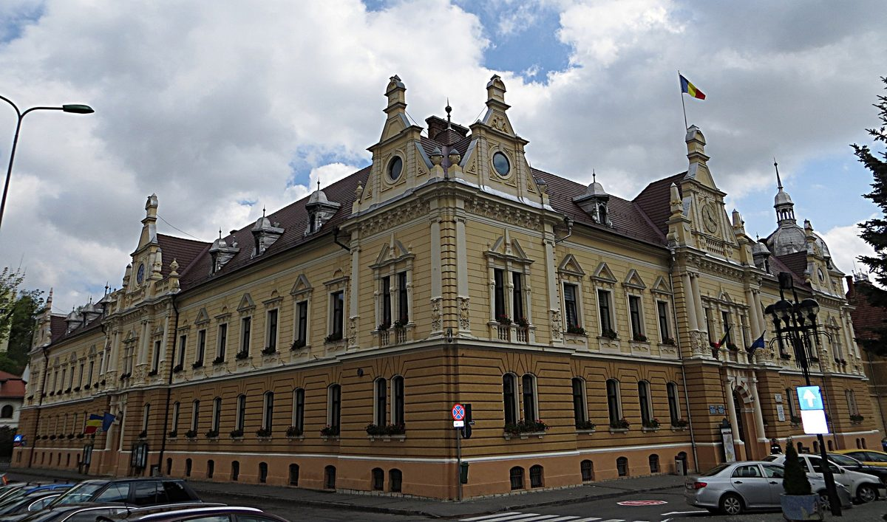

루마니아 브라쇼브 시, 22ha에 20MW 태양광 단지…2027년 가동해 학교·극장·가로등 등 시 기관 전기 90% 충당 계획

부시장 "저장 배터리 구매 절차 중"…처음엔 국가 전력망에 넣고 시 전기요금과 정산, 사업비·재원·부지 위치는 공개 안 해
루마니아 중부 도시 브라쇼브(Brașov) 시가 22ha 부지에 20MW 규모 태양광 단지를 마련해 2027년부터 가동하고, 여기서 나온 전기로 시청과 시 소속 기관이 쓰는 전력의 90%를 대겠다는 계획을 내놓았다. 루치안 퍼트러슈쿠(Lucian Pătrașcu) 부시장은 2일 열린 도시 정책 행사에서 충당 범위로 브라쇼브의 모든 학교와 고등학교, 시 산하 기관, 극장·오페라·필하모닉, 시 전체 가로등을 들었다. 그는 전기를 처음에는 국가 전력망으로 보내고 시가 내는 전기요금과 상계하는 방식으로 쓰게 된다고 설명했다. 시는 에너지 저장 배터리를 사들이는 절차도 밟고 있으며, 부시장은 브라쇼브가 이런 투자를 하는 루마니아 첫 도시라고 주장했다. 같은 자리에서 그는 시가 전기버스 250대를 운행하고 있고 88대를 더 사들여 2027년 1월부터 인도받으며, 시 소유 충전소가 150곳이라고 소개했다. 다만 사업비와 재원, 부지 위치, 시공사, 연간 발전량은 이날 공개되지 않았고 주민 출자 같은 참여 방식도 언급되지 않았다.
시민에너지 관점
오스트리아 빈의 시 소유 에너지회사 빈 에너지(Wien Energie)는 2012년부터 시민이 태양광 패널 몫을 사서 시 발전소에 빌려주고 대가를 받는 '시민 태양광 발전소'를 운영해, 공공 발전소에 시민 지분을 붙이는 길을 보여 줬다. 학교와 가로등 전기를 시가 직접 만든 전기로 대겠다는 브라쇼브의 계획은 공공요금 부담을 줄이는 좋은 출발이지만, 사업비와 재원이 공개되지 않아 시민이 계획을 따져 볼 근거는 아직 부족하다. 공공이 소유하면 충분하지 시민 몫이 왜 필요하냐는 물음에는, 시민이 출자하면 사업비 부담을 나누고 주민의 동의와 감시가 함께 따라온다고 답할 수 있다. 공공부지·공공건물 태양광을 늘리려는 우리 지자체도 계획 단계부터 사업비와 재원을 밝히고 주민 출자 몫을 열어 두어야 한다.
출처: News.ro 2026-11-02 기자 미표기 원문 보기
창간 전 시험 발행 기사입니다.
ルーマニア・ブラショフ市、22haに20MWの太陽光発電所…2027年稼働で学校・劇場・街灯など市機関の電力の90%を賄う計画
副市長「蓄電池の購入手続き中」…当初は国の送電網に送り市の電気料金と相殺、事業費・財源・用地の場所は非公表
ルーマニア中部の都市ブラショフ（Brașov）市が、22haの用地に20MW規模の太陽光発電所を設けて2027年から稼働させ、その電気で市役所と市所属機関が使う電力の90%を賄う計画を打ち出した。ルチアン・パトラシュク（Lucian Pătrașcu）副市長は2日に開かれた都市政策の催しで、賄う範囲としてブラショフのすべての学校と高校、市の傘下機関、劇場・オペラ・フィルハーモニー、市全体の街灯を挙げた。電気は当初、国の送電網に送り、市が支払う電気料金と相殺する形で使うことになると説明した。市はエネルギー貯蔵用の蓄電池を購入する手続きも進めており、副市長はブラショフがこうした投資を行うルーマニア初の都市だと主張した。同じ場で副市長は、市が電気バス250台を運行しており、さらに88台を購入して2027年1月から納入を受け、市所有の充電スタンドが150カ所あると紹介した。ただし事業費と財源、用地の場所、施工会社、年間発電量はこの日公表されず、住民出資のような参加の仕組みにも言及はなかった。
市民エネルギーの視点
オーストリア・ウィーンの市所有エネルギー会社ウィーン・エネルギー（Wien Energie）は2012年から、市民が太陽光パネルの持ち分を買って市の発電所に貸し、対価を受け取る「市民太陽光発電所」を運営し、公共の発電所に市民の持ち分を付ける道を示してきた。学校や街灯の電気を市が自らつくった電気で賄うというブラショフの計画は公共料金の負担を減らす良い出発点だが、事業費と財源が公表されておらず、市民が計画を検証する根拠はまだ乏しい。公共が所有すれば十分で、なぜ市民の持ち分が必要なのかという問いには、市民が出資すれば事業費の負担を分け合え、住民の同意と監視が共についてくると答えられる。公有地や公共建物の太陽光を増やそうとする韓国の自治体も、計画の段階から事業費と財源を明らかにし、住民出資の枠を開いておくべきだ。
出典: News.ro（ニューズ・ロ） 2026-11-02 記者名表記なし 原文を読む
創刊前の試験発行記事です。
罗马尼亚布拉索夫市在22公顷土地上建20MW光伏电站…计划2027年投运，供应学校、剧院、路灯等市属机构90%用电
副市长称"正在采购储能电池"…初期并入国家电网并与市政电费抵扣，项目费用、资金来源和选址均未公开
罗马尼亚中部城市布拉索夫（Brașov）市提出计划，在22公顷土地上建设20MW光伏电站，自2027年起投运，以其电力满足市政府及市属机构90%的用电。副市长卢奇安·珀特拉什库（Lucian Pătrașcu）2日在一场城市政策活动上列举了供电范围：布拉索夫所有中小学和高中、市属机构、剧院、歌剧院、爱乐乐团以及全市路灯。他解释说，电力初期将输入国家电网，并以与市政府所缴电费相抵的方式使用。市政府还在办理采购储能电池的程序，副市长声称布拉索夫是罗马尼亚第一个进行此类投资的城市。他在同一场合还介绍，该市目前运营250辆电动公交车，另已采购88辆，将从2027年1月起交付，市属充电站有150处。不过，当天并未公开项目费用、资金来源、选址、施工方和年发电量，也未提及居民出资等参与方式。
市民能源视角
奥地利维也纳市属能源公司维也纳能源（Wien Energie）自2012年起运营"市民光伏电站"，由市民购买光伏板份额租给市属电站并获得回报，展示了在公共电站中加入市民股份的路径。布拉索夫用市政自建电站为学校和路灯供电的计划，是减轻公共用电负担的良好开端，但由于项目费用和资金来源没有公开，市民审视这一计划的依据仍然不足。对于"公共所有就够了，为什么还需要市民份额"的疑问，可以回答说：市民出资可以分担项目费用，居民的认同和监督也会随之而来。希望扩大公共土地和公共建筑光伏的韩国地方政府，也应从规划阶段就公开项目费用和资金来源，并为居民出资留出份额。
来源: 罗马尼亚新闻社（News.ro） 2026-11-02 未署名 查看原文
本文为创刊前试发行文章。
Romanian city of Brașov plans 20 MW solar park on 22 hectares to supply 90% of municipal institutions' power, from schools and theatres to street lighting, from 2027
Deputy mayor says battery storage purchase is under way; power to be fed into the national grid at first and offset against the city's bills; cost, funding and site not disclosed
The city of Brașov in central Romania plans to bring a 20 MW solar park on a 22-hectare site into operation from 2027 and use its output to cover 90% of the electricity consumed by the city hall and the institutions under it. Deputy Mayor Lucian Pătrașcu, speaking at an urban policy event on November 2, said the coverage would include all of Brașov's schools and high schools, the city's subordinate institutions, the theatre, opera and philharmonic, and all of the city's street lighting. He explained that the power would at first be fed into the national grid and used by offsetting it against the electricity bills the city pays. The city is also going through the procedure to buy energy storage batteries, and the deputy mayor claimed Brașov was the first city in Romania to make such an investment. At the same event he said the city runs 250 electric buses, has bought 88 more for delivery from January 2027, and owns 150 charging points. The project's cost, funding source, site location, contractor and annual output were not disclosed, however, and no form of resident participation such as citizen investment was mentioned.
Citizen Energy View
Since 2012, Wien Energie, the city-owned energy company of Vienna in Austria, has run "citizen solar power plants" in which residents buy a share of the panels, lease it back to the municipal plant and receive a return, showing how citizen stakes can be added to public power plants. Brașov's plan to power its schools and street lights with electricity the city generates itself is a good start toward cutting public energy bills, but with the cost and funding undisclosed, citizens still have little basis on which to scrutinise it. To those who ask why a citizen share is needed when public ownership should be enough, the answer is that citizen investment spreads the cost and brings residents' consent and oversight with it. Korean local governments that want more solar on public land and buildings should likewise disclose costs and funding from the planning stage and keep a share open for residents' investment.
Source: News.ro 2026-11-02 No byline Read the original
This article was published during the trial period before launch.